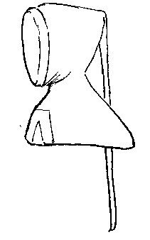
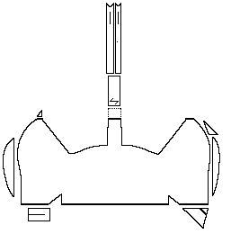
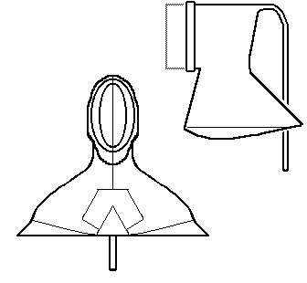

)
The Bocksten Bog Man was wearing a hood on his head, made from what is now a fairly dark brown, heavily fulled woolen twill fabric. This is the best preserved of all his garments.
The Hood, the shoulder cape, and the liripipe were all cut from a single piece of fabric. with the selvage edge forming the opening for the face. The neckline and chestline have been cut away to give sufficient width to the shoulders.
The Liripire is joined in two places. The upper piece was joined by a seam along the underside. The lower portion was cut in two pieces, joined by a seam along the upper and lower sides.
The Hood was completely dismantled during conservation, and at no time, no trace was found of a lining.
After the hood had been washed and the fabric laid true to the threads, distinct reconstruction errors (from 1936) were found at several points. For example, the front gore had been wrongly placed at the lower edge of the shoulder cape. Then there was the question of the v-shaped cloth. This is still a debateable point, but its transfer to the hood seems at present the most logical arrangement.
The lower edge of the hood was gently rounded. Owing to a shortage of cloth, this shape could not be cut directly, but had to be achieved by means of joins. Two reddish brown fragments were transferred from here to the Cloak.


An interpretation of the Hood.Go to Hoods Page; Bocksten Bog Site Page
Some Clothing of the Middle Ages, by I. Marc Carlson, Copyright 1996 This code is given for the free exchange of information, provided the Author's Name is included in all future revisions, and no money change hands-